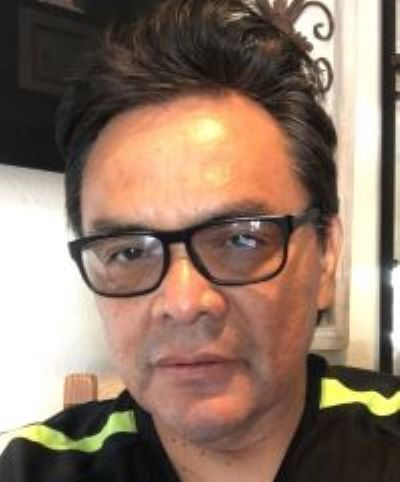

About Me
My name is Randy and I am originally from the beautiful state of Nevada and I grew up in the "Biggest Little City in the World" Reno. My earliest childhood dreams were to experience and see the world and I got my wish by joining the United States Navy. My natural human nature is to help and heal people so I received my nursing and medical training by being a Hospital Corpsman and I really enjoyed my different duty stations around the world.
My personal hobbies include, working out at the gym and running by the beach, because I love being near the ocean. I enjoy listening to all types of music and I enjoyed playing my electric guitar playing rock music. I enjoy experiencing different food cuisines with Asian and Mexican food my favorites.
My personal hobbies include, working out at the gym and running by the beach, because I love being near the ocean. I enjoy listening to all types of music and I enjoyed playing my electric guitar playing rock music. I enjoy experiencing different food cuisines with Asian and Mexican food my favorites.
I have always been interested in a career in the digital revolution and web development and presently I am in midst of a career change hoping to apply my passion and desire to make a difference in the digital world and make a difference in others.